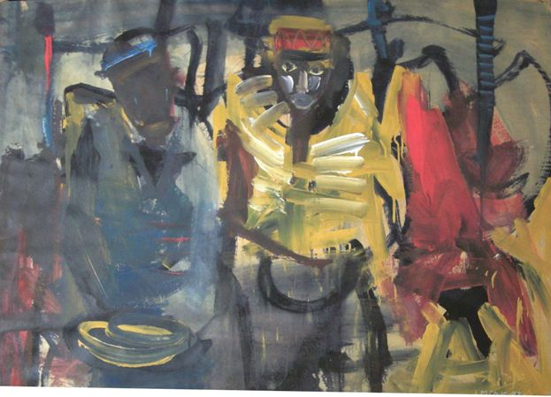

Luis Meque
1966–1998
Artist Biography
Luis Meque was born in Tete, Mozambique and went to school in Beira and Chimoyo before military service. In 1988 he left for Zimbabwe where in 1988 and 1989 he attended the BAT Workshop School at the National Gallery in Harare. He had immediate success with an expressionist style that captured a feeling of anomie in an urban environment and solo shows followed in Zimbabwe and Germany. His works were also shown in numerous mixed exhibitions in the United States, South Africa, Germany, Norway, Togo and elsewhere. In 1996 he joined the arts project “African-European Inspiration” in Alsdorf, Germany but Meque had contracted aids and died in Harare in 1998. His reputation has continued to grow, however, a large solo retrospective being held in 2017 at Gallery Delta in Harare. Meque’s work was also included in the major 2023 exhibition at the Zeitz MOCCA in South Africa, When We See Us: A Century of Black Figuration in Paintings, which travelled to Kunstmuseum Basel in 2024.

Untitled, 1997